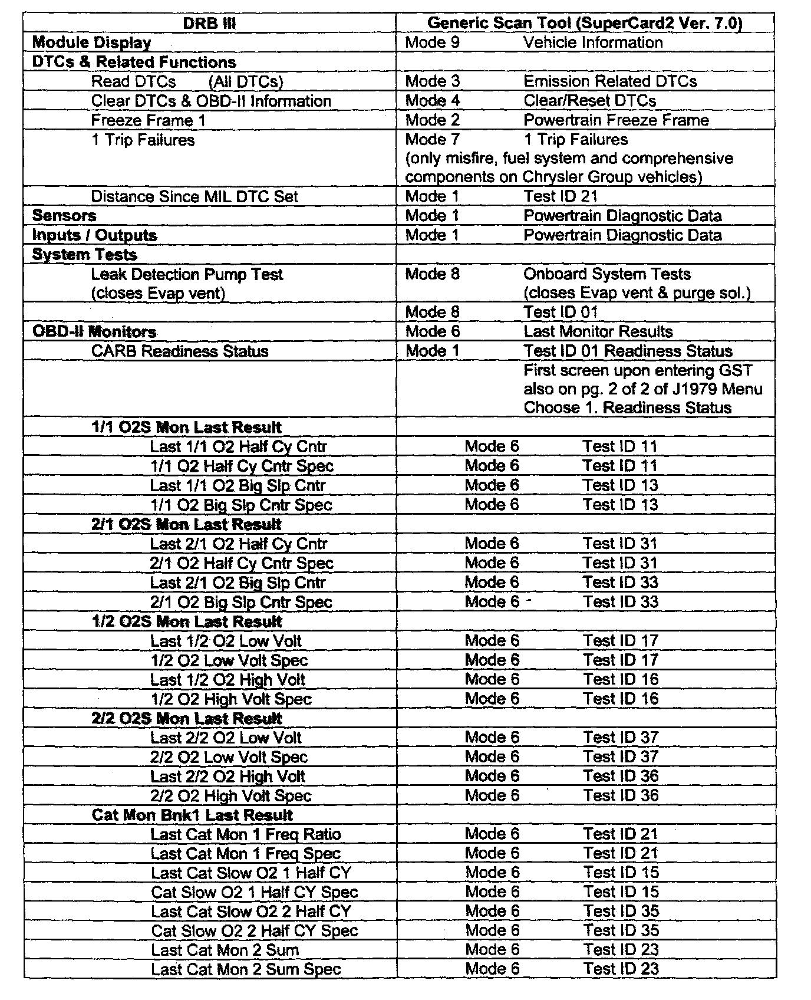
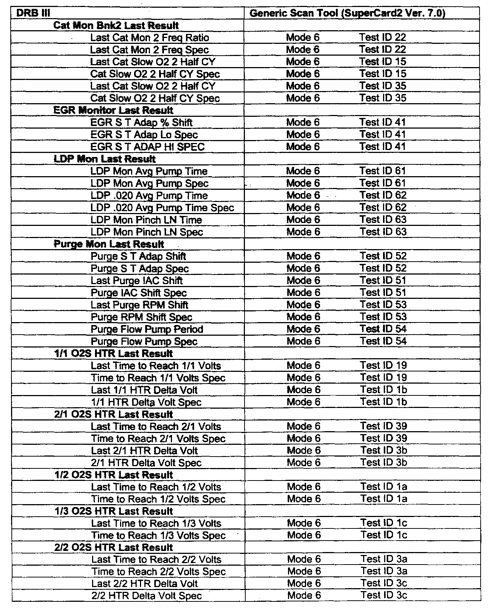
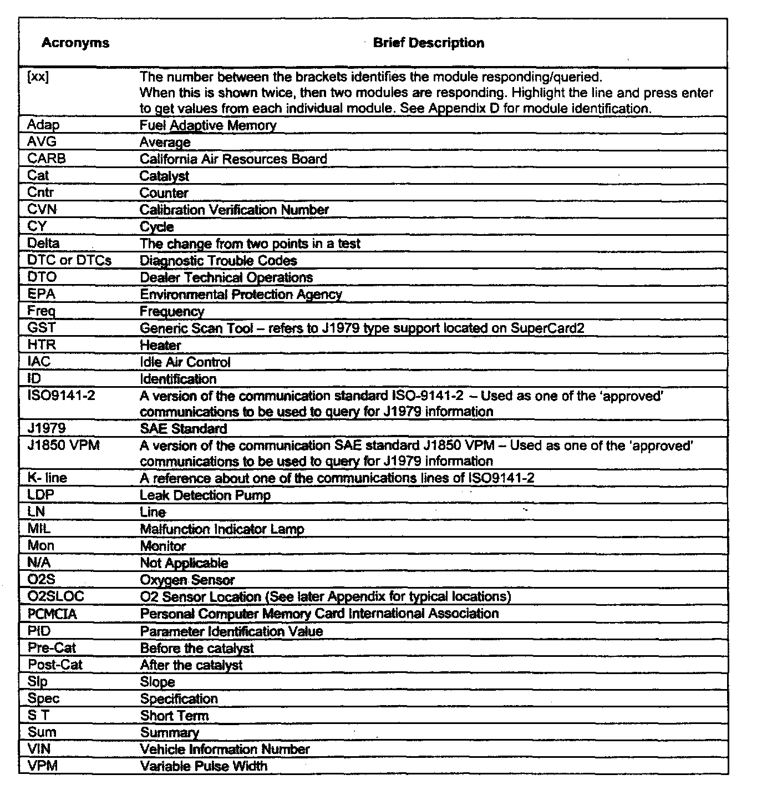
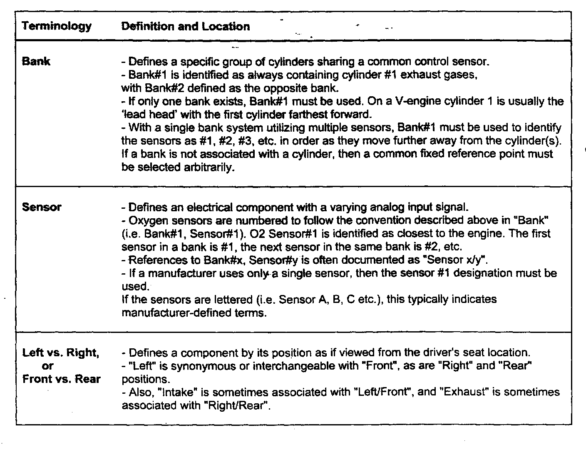
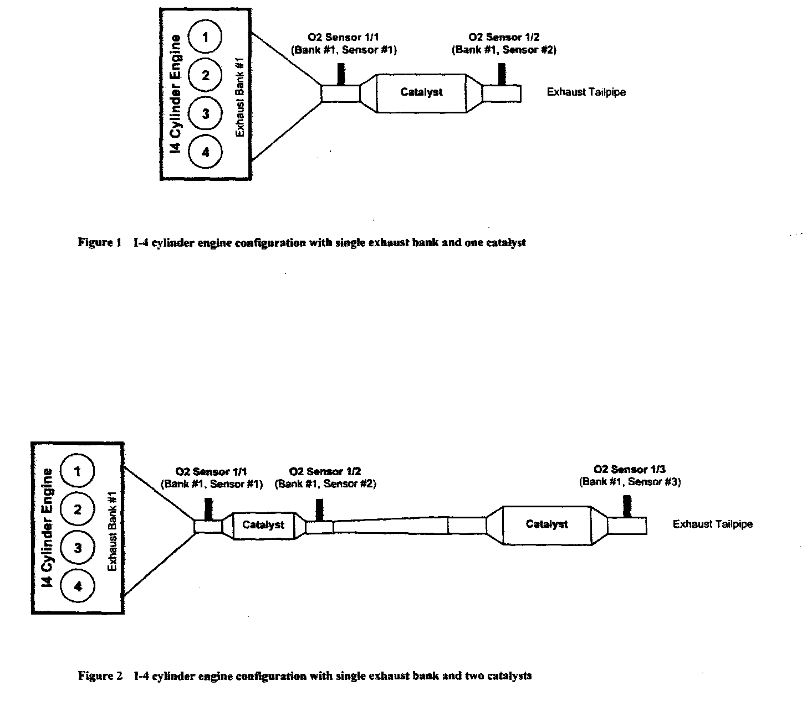
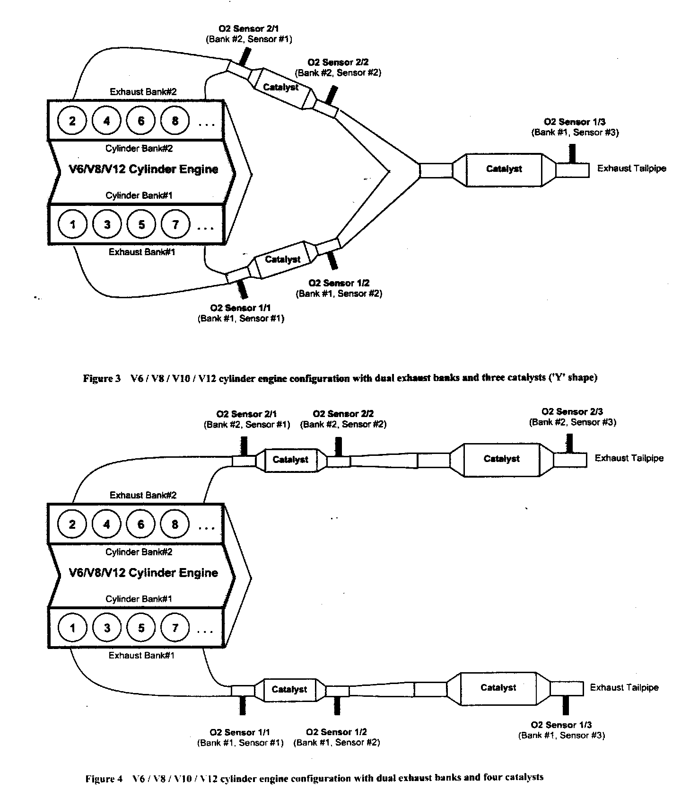
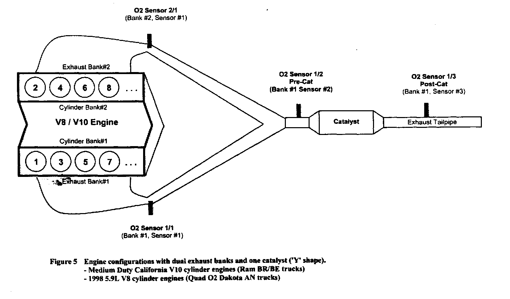
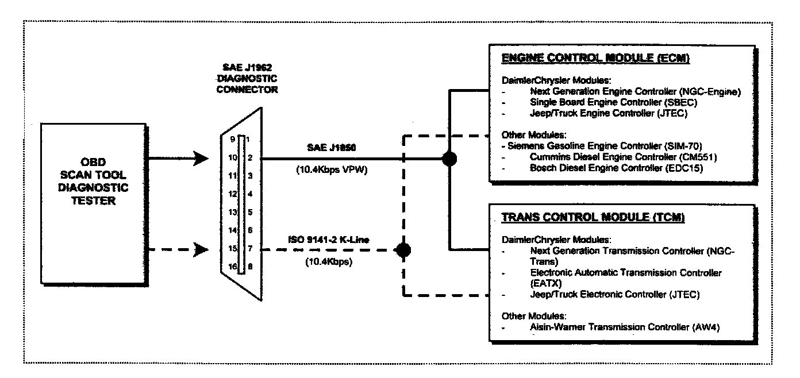
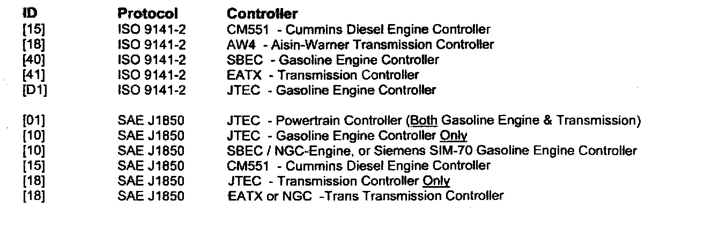

Appendix A, B, C and D Information


Appendix A - Cross Reference -- DRB III Monitors vs. Generic Scan Tool

Appendix B - Acronyms/Terms used in this Document

Appendix C - 02 Sensor & Catalyst System Configurations
Overview
To satisfy OBD-II regulation for the common identification of 02 sensor components as located within the exhaust flow of various catalyst system configurations, a standard was developed for consistent placement and reference of these components. The following conventions are used for identifying and referencing 02 sensor placement in multiple-bank systems. These conventions are documented with full concurrence in recommended practices SAE J1930 "E/E Systems Diagnostic Terms, Definitions, Abbreviations, and Acronyms", SAE J1979 "Legislative Diagnostic Protocol", and SAE J2012 "Diagnostic Trouble Code Definition".
Example O2 Sensor & Catalyst System Configurations



The examples shown illustrate and clarify these conventions.

Appendix D - Diagnostic Communication Interface
For all DaimlerChrysler Group Powertrain applications, the serial data link to be utilized for support of the J1979 diagnostic protocol uses either the SAF J1650 data communication interface, or the ISO 9141-2 data communication interface. Only one interface is supported per vehicle, which reports all J1979 diagnostic test modes. Both communication types support a single-wire implementation utilizing a baud rate of 10.4Kbps.
Controller Identification

When using GST to query supported controllers, it may prove useful to know which controller responded with the shown data. Use the table for identification purposes.